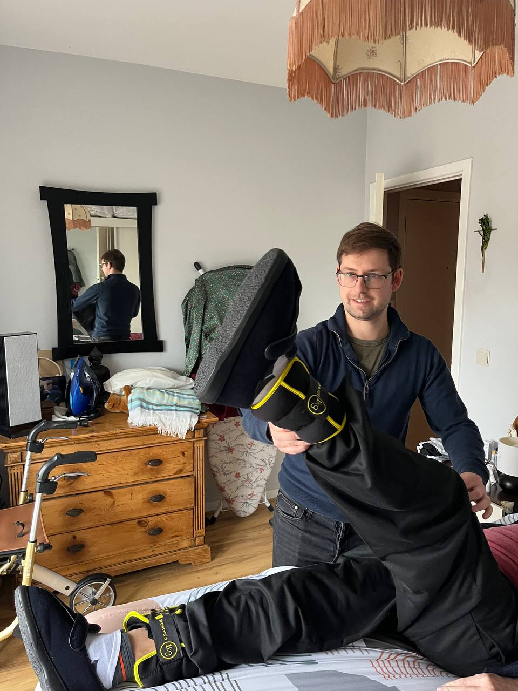
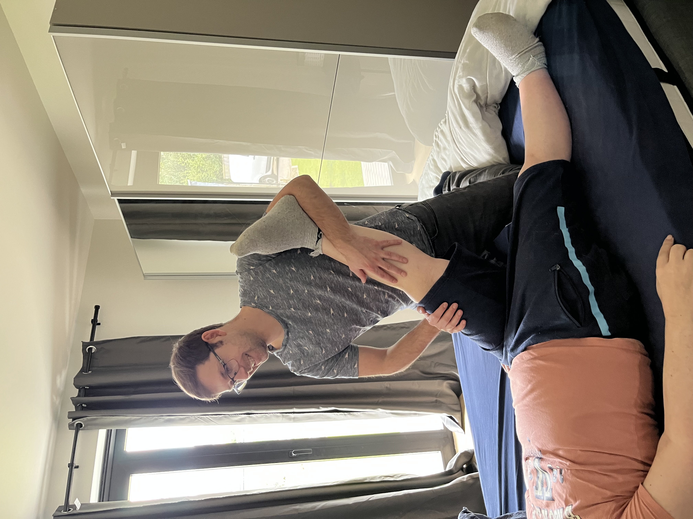
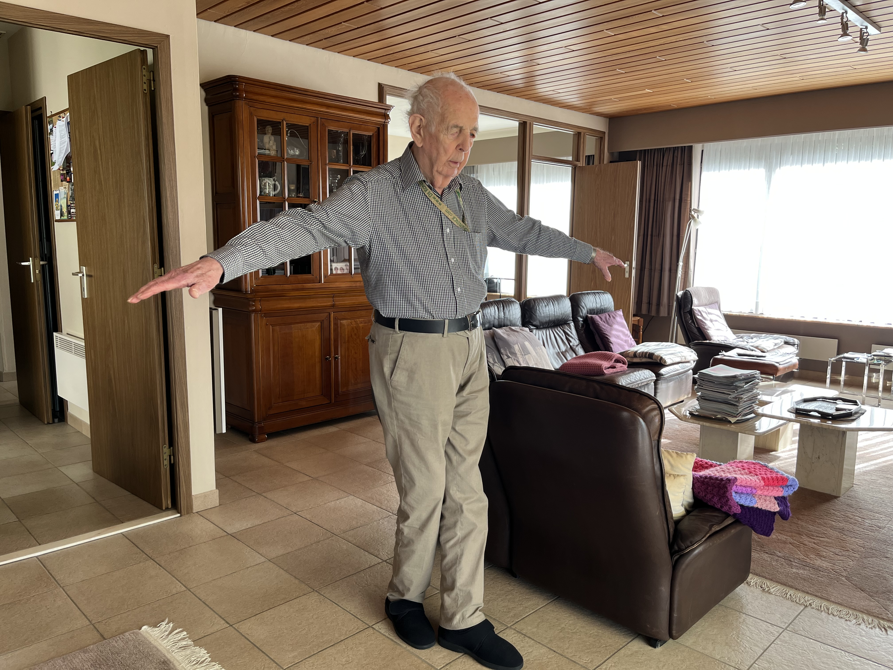

Onze Specialisaties
Gerichte behandelingen voor diverse aandoeningen, aangepast aan uw individuele behoeften

Algemene Kinesitherapie
Behandeling van algemene klachten en blessures in de comfort van uw eigen huis.
Onze Behandelingen:
- Rugklachten en nekpijn
- Sportblessures en herstellende behandeling
- Gewrichtsproblemen en stijfheid
- Spierspanning en trigger points
- Post-operatieve revalidatie
- Preventieve begeleiding en advies
- Houdings- en bewegingscorrectie

Orthopedie
Specialistische behandeling van bot-, gewrichts- en spierklachten voor optimaal functioneel herstel.
Orthopedische Specialisaties:
- Post-operatieve revalidatie (knie, heup, schouder)
- Fractuurbehandeling en immobilisatie herstel
- Gewrichtsmobilisatie en spierkrachttraining
- Artrose en gewrichtsslijtage begeleiding
- Meniscus- en bandletselbehandeling
- Functioneel bewegingsherstel
- Prothese revalidatie en aanpassing

Neurologie
Gespecialiseerde behandeling van neurologische aandoeningen voor verbetering van motoriek en cognitieve functies.
Neurologische Behandelingen:
- CVA (beroerte) revalidatie en nazorg
- Multiple Sclerose begeleiding
- Parkinson behandeling en ondersteuning
- Hersenletsel rehabilitatie
- Evenwichts- en coördinatietraining
- Spasticiteitsbehandeling
- Cognitieve revalidatie-ondersteuning

Gangrevalidatie
Specifieke training voor het verbeteren van looppatroon, evenwicht en mobiliteit, thuis en in uw directe omgeving.
Gangrevalidatie Programma's:
- Looppatroon analyse en correctie
- Evenwichtstraining en valpreventie
- Krukken- en rollatortraining
- Traplopen en hindernissen overwinnen
- Coördinatie- en reactieoefeningen
- Zelfstandigheid en veiligheid verbeteren
- Omgevingsaanpassingen advies